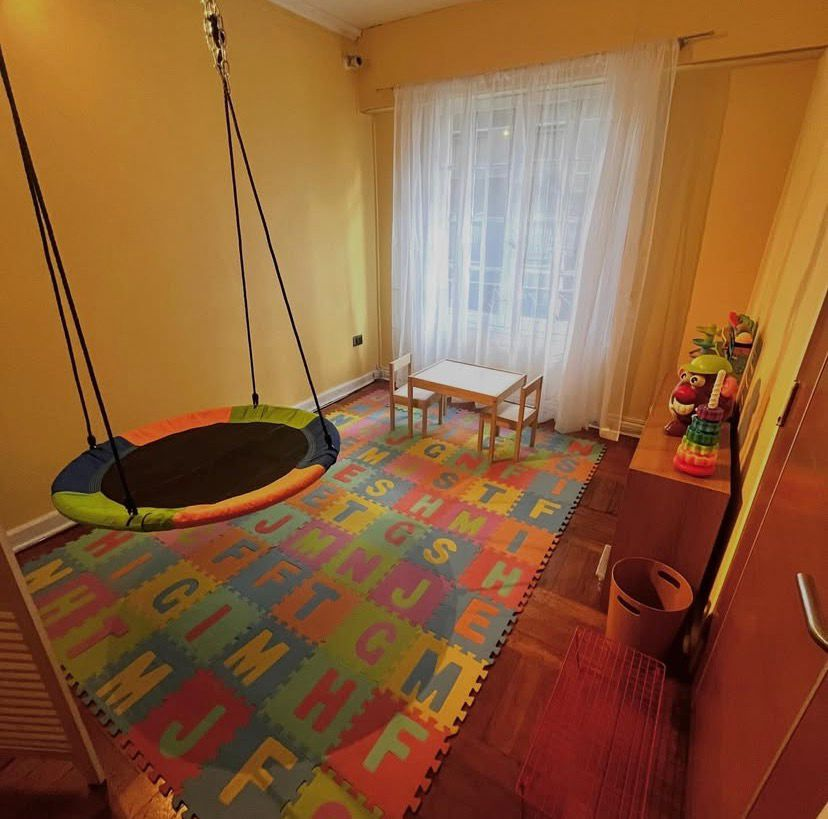
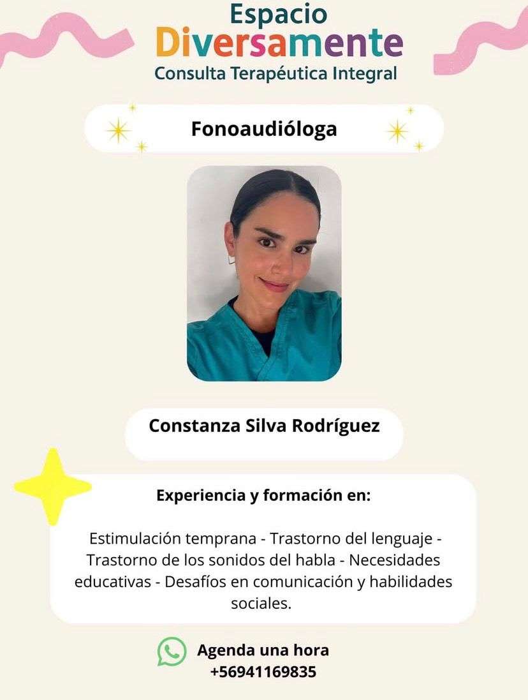
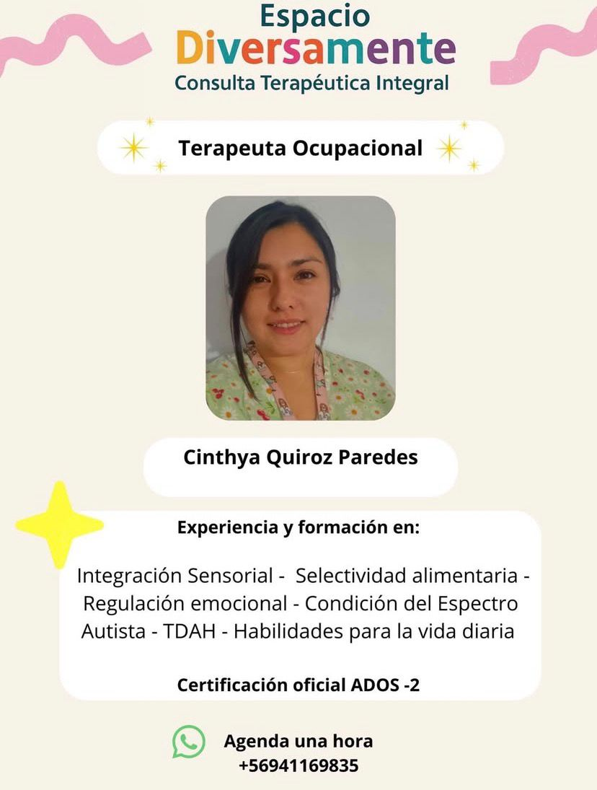
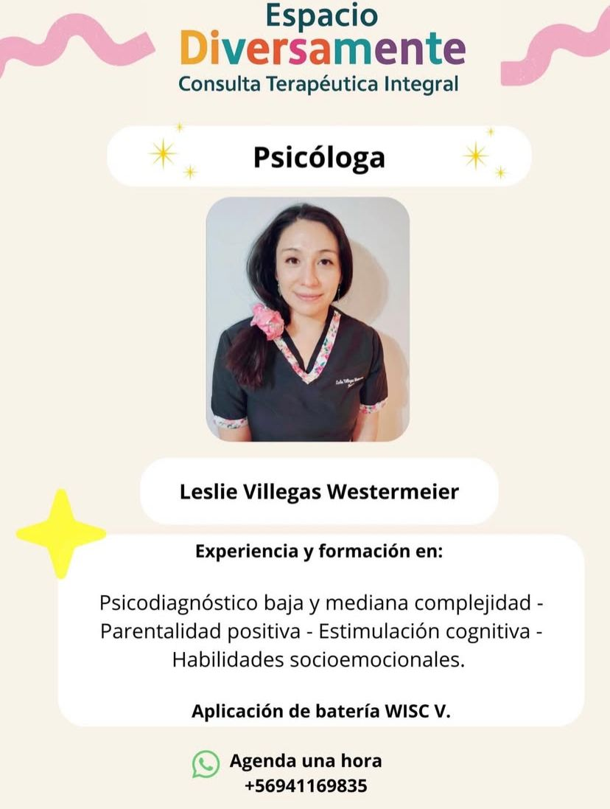
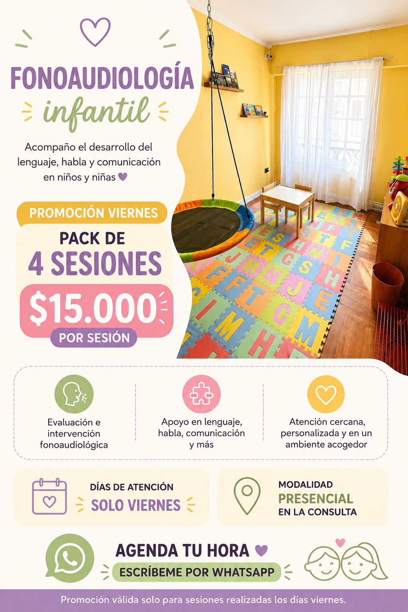
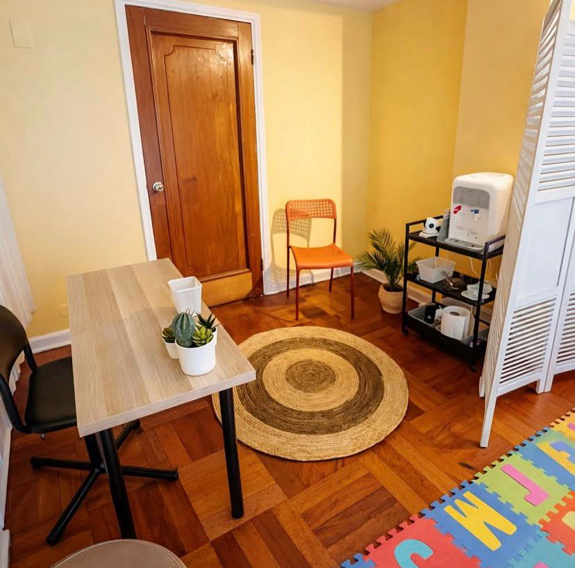
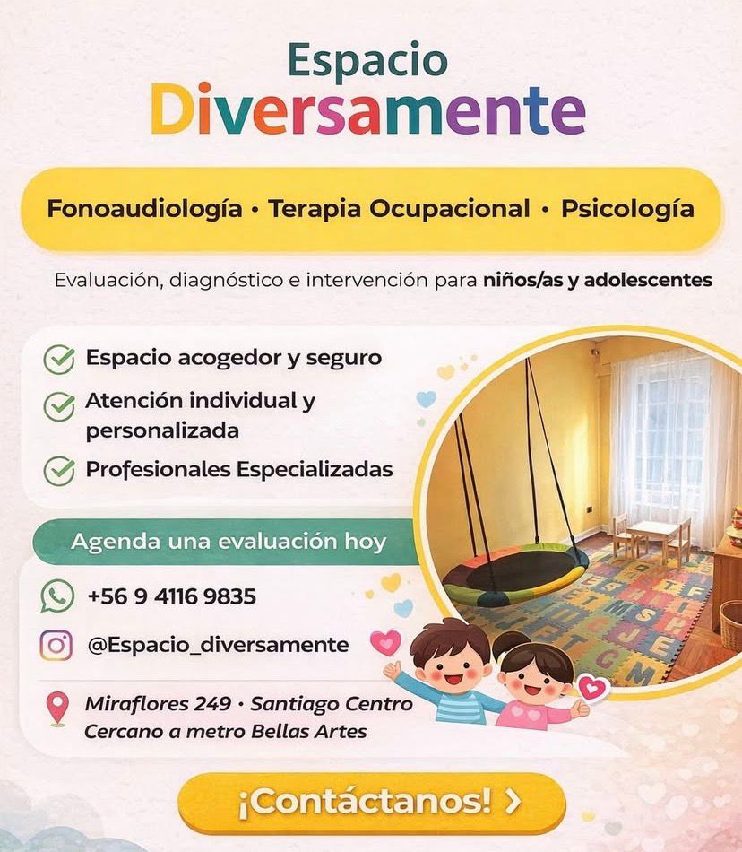

Atención interdisciplinaria en fonoaudiología infantil, terapia ocupacional y psicología para niños, niñas y adolescentes en Santiago Centro.

Apoyamos el desarrollo del lenguaje, habla y comunicación, favoreciendo una mejor expresión, comprensión e interacción social.
Promovemos autonomía, integración sensorial, regulación emocional y habilidades necesarias para la vida diaria.
Acompañamos el bienestar emocional, conductual y socioemocional, entregando herramientas para niños, niñas y sus familias.

FonoaudiólogaLa fonoaudiología infantil busca fortalecer el desarrollo del lenguaje, la comunicación y los sonidos del habla. Su objetivo es que niños y niñas puedan expresarse mejor, comprender su entorno y desenvolverse con mayor seguridad en contextos familiares, escolares y sociales.
Beneficios: mejora la expresión oral, comprensión, confianza comunicativa y participación social.

Terapeuta OcupacionalLa terapia ocupacional infantil busca favorecer la autonomía, integración sensorial, regulación emocional y participación del niño o niña en actividades cotidianas, escolares y sociales.
Beneficios: mayor independencia, mejor adaptación sensorial, regulación emocional y desarrollo de habilidades funcionales para la vida diaria.

PsicólogaLa psicología infantil busca acompañar el bienestar emocional, conductual y socioemocional de niños, niñas y adolescentes, entregando estrategias para comprender y afrontar sus desafíos cotidianos.
Beneficios: fortalece la autoestima, regulación emocional, habilidades sociales, adaptación escolar y vínculo familiar.



📱 WhatsApp: +56 9 4116 9835
📧 consulta.diversamente@gmail.com
📍 Miraflores 249 · Santiago Centro
🚇 Cercano a Metro Bellas Artes
📸 Instagram: @espacio_diversamente
Escríbenos para consultar disponibilidad, valores, modalidad de atención y horarios vigentes.